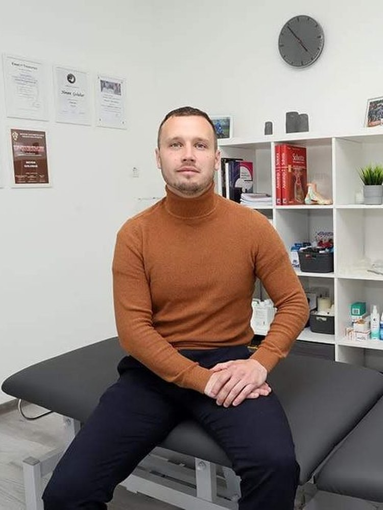

Osnivač i vlasnik
Neven Golubar, mag. physioth.
Fizioterapeut — 14 godina rada u vrhunskom sportu i rehabilitaciji
Iza njega je 14 godina profesionalnog rada u sportu i rehabilitaciji — kroz njegove ruke prošle su stotine vrhunskih sportaša, od klinaca u akademijama do klupskih i reprezentativnih zvijezda. Njegov stil rada je jednostavan: maksimalna posvećenost, ustrajnost i profesionalnost. Ne traži privremena rješenja, već se fokusira na potpun i siguran povratak u punu formu — filozofiju po kojoj je osnovan i NeMo.
14 god.iskustva u sportu
A reprezentacijahrvatski nogomet
9 god.GNK Dinamo Zagreb
mag. physioth.Zdravstveno veleučilište Zagreb
Gdje je sve radio
2022. – danas
Hrvatska nogometna A reprezentacija
Član medicinskog tima / Fizioterapeut
- Briga o zdravlju i oporavku najboljih seniorskih reprezentativaca tijekom okupljanja, kvalifikacija i velikih natjecanja.
- Provedba modernih protokola za brzu regeneraciju igrača između zahtjevnih utakmica.


9 godina
GNK Dinamo Zagreb
Fizioterapeut
- Omladinska škola: godinama je radio na prevenciji i rehabilitaciji mladih talenata.
- Voditelj službe: jedan intenzivan period vodio je i organizirao cijelu fizioterapeutsku službu u Dinamovoj akademiji.
- Seniorska B ekipa: vodio je fizioterapiju za drugu momčad, pripremajući igrače za skok u profesionalni, prvoligaški nogomet.
4 godine
Hrvatska nogometna U21 reprezentacija
Fizioterapeut
- Glavni i odgovorni za fizioterapiju i zdravstveni karton mlade reprezentacije pod okriljem HNS-a.
4 godine
Hrvatska futsal A reprezentacija
Fizioterapeut
- Skrb o fizikalnoj terapiji i spremnosti futsal reprezentativaca na europskim i svjetskim natjecanjima.
5 godina
MNK Nacional Zagreb
Fizioterapeut
- Svakodnevna klupska fizioterapija za momčad koja je u tom periodu dominirala hrvatskim futsalom.
Školovanje i fakultet
- Magistar fizioterapije (mag. physioth.) — Zdravstveno veleučilište u Zagrebu
- Fizioterapeutski tehničar — Srednja škola u Bedekovčini
Glavne vještine
- Golemo iskustvo u vrhunskom sportu — poznaje sustav iznutra.
- Organizacija i vođenje medicinskih timova, suradnja s trenerima.
- Napredna manualna terapija i kreiranje prilagođenih programa oporavka.
- Hladna glava pod pritiskom — navikao na brze odluke u dinamičnom okruženju.
Tečajevi i tehnike koje koristi